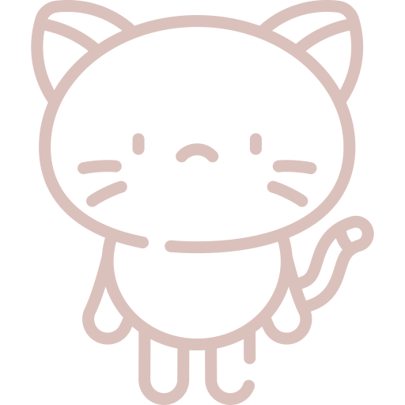
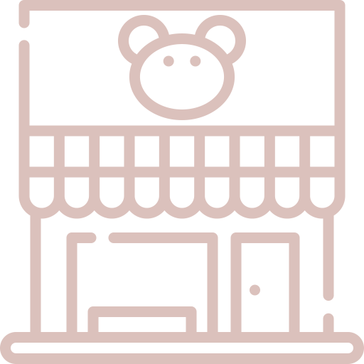
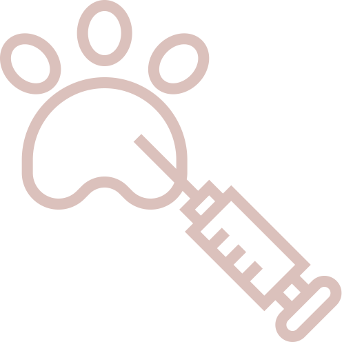
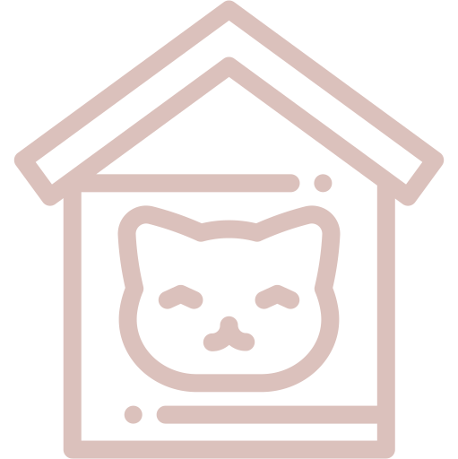

Find your feline soulmate!
-

Cats are rescued
-

They are vaccinized, spayed and chipped
-

Addapted cats start working at a cat cafe
-
Cats find forever home
-

We collaborate with two local shelters. A cat cafe is part cafe, part cat adoption center. Our purpose is to provide a temporary home for adoptable rescue cats.
Cats are well looked after, flea and worm free, spayed, up to date with injections and microchipped for safety. They are socialized by our cat staff from a feral kitten to a friendly cat.
Adoption
Please note: You must be 20 or older to apply to adopt a cat. We also reserve the right to contact your landlord (if applicable) to ensure that you are allowed to adopt from us, as well as a veterinarian (if applicable) for records of any previously owned or currently owned pets.
- To adopt a cat, you definitely should to meet them personally to learn their habits and teperament. Do not be shy to ask the administrator about a cat to learn the maxmum amount of information about them.
- Discuss your decision with family members, objectively evaluate your ability to take care of the animal for the next 15-20 years.
- When you are sure that you want to adopt a particular cat you must fill out the questionaire. You can fill in the questionnaire in the cafe or request e-version.
- After filling out the questionnaire a representative of the shelter will contact you and ask questions about the content of the pet.
- We also reserve the right to refuse adoption to any applicant, in the best interest of our cats. Foster has the final say on all adoptions.
- If the interview was successful, then we will agree with you about the date and time when the animal can be taken. You need to have your passport or ID and cat carrier. You must sign up an adoption contract.
We are always sad to see our kitties go but also very happy they have loving homes and we have an opportunity to help more kitties! We wish all cats and their owners long and happy years together.